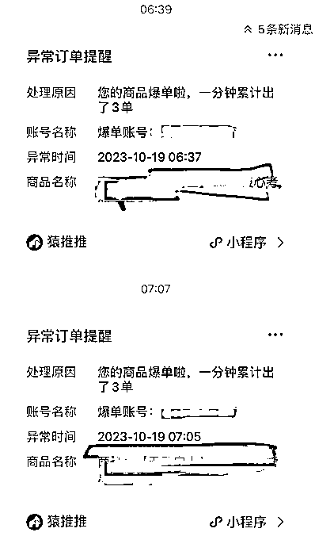
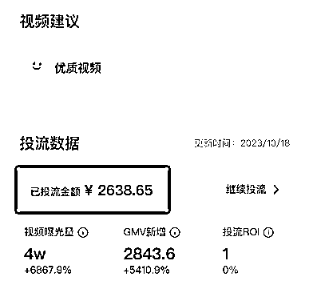

来源：https://ex549imveny.feishu.cn/docx/N8JTdspH9o5cVjxwXEfcP241nBd
许多年之后，当我打开抖音，依然会想起，2023年10月19日的那个早上，我拿起手机，看猿推推的连续多条异常提醒。

于是，我打开抖老板，看了一下详细的消息。
早上8:26，有效单数108单。
忽然就有种佛光普照的感觉了。
实话说，皇叔做抖音这一年来，虽然一天也有过爆单，但跟一天能出1000单的大佬（比如豪叔@猎音狮 ）还是差远了。
至于刚到早上8点多就出了100多单，还真是头一次。
皇叔在之前的文章中，也分享了不少做短视频带货的心得，今天就针对这个爆单视频，做一个简单的复盘吧。
其实说穿了就是从不同的角度不断迭代，蹭蹭优化。
每一个咨询我，想做带货的人，我都会跟他说，建议让他做口播的形式。
一方面，口播更容易树立个人ip，另一方面，商家也更认可口播这种形式。
导演小策说过一句话让我印象非常深刻：你可以白嫖我的视频，但是看完我的视频，我一定要在你的脑子里留下点什么。
那么什么样的处境才是效果最好的呢？
我的答案是：没有标准答案。
这个要靠自己不停的尝试。
拿我自己来说，我试过很多很多种形式。
比如正襟危坐式的，试过后面用背景布，也试过直接绿幕抠图，但是效果都比较一般。
比如激情咆哮式的，这个形式比较好玩，但是录起来很累，转化率一般，当然了，也可能跟我演的有点尬有关系。
比如娓娓道来式的，就像跟你聊天，为了留下槽点，我还特意买了顶绿帽子，老婆看完很激动的问我：要不我送你顶真的？！！
最终结果是，最后这个形式，现在来看是比较适合我的，朋友们看完也说，看着很舒服。
现在做教辅的一个优点是，商家非常愿意给达人投流。
所以我们作为达人，只要安心出作品、不断打磨作品就好了，至于投流多少、亏不亏钱这种事情，交给商家就好了。
比如我爆的这条视频，商家已经投了2000多了，而且可以预见到，后面他还会继续投下去。

但是这里有个问题，就是商家也是需要不断迭代的。
因为投流也是有门道的。
比如有些商家是手动出价，他说给你投流了，结果你从后台一看，就跑了几分钱，完全是浪费感情。
还有些商家更可恶，之前说的好好的投流，结果你出完视频，他又提出各种要求才能给投流，这基本就属于欺骗行为了，可以直接拉黑的。
而哪些商家可以，哪些商家不行，这些都是需要一点点接触，自己不断总结的。
综合上面2点，就可以开始迭代视频了。
也就是说，当你认准了一个商家，而且对他们家的某一个品觉得可以，那这个时候，就要开始不断的产出视频了。
不同的文案、不同的展现形式，总之是变着花样的出视频，然后把链接甩给商家，让他去投流。
剩下的事情，你要做的，就是早起睁眼打开手机，迎接惊喜了。